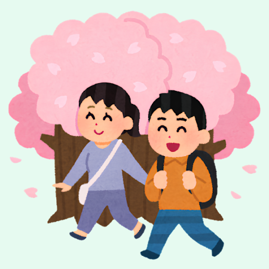

舌苔walk
Macau City Walk
第六屆澳門聯校科學展覽參賽作品
AI 舌診 · 七情雙維度辨證系統
6th Macau Joint School Science Exhibition Entry
AI Tongue Diagnosis & Emotion System
舌象視覺特徵 Tongue Vision
Dify API 實時分析舌象 Real-time Dify API
七情量化測評 7-Emotions Test
探查情緒內傷狀態 Emotional well-being
避邪調養 CityWalk 地圖嚮導 CityWalk Map Guide
根據 AI 舌診與情志結果自動切換專屬 OSM 向量路線 Auto-switch OSM vector routes based on results
AI 數據標準化採集 AI Data Standardization
請上傳舌面照片或使用展會預設模版進行體驗 Upload tongue photo or select a preset template
科展快速體驗 - 預設舌象特徵 Exhibition Quick Demo - Presets
點擊此處啟動 內嵌相機 對齊拍攝
或在上方選擇預設特徵模版
Click to start Embedded Camera
or pick a preset above
* 聲明：本數據與報告僅作中醫科普與文旅養生建議參考，不具醫療診斷效力。 * Disclaimer: For wellness reference only, not a medical diagnosis.
載入題目中...
☯ 身心多元避邪調養處方 Holistic Wellness Prescription